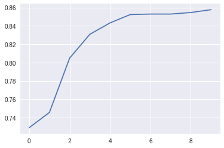
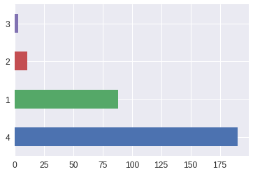
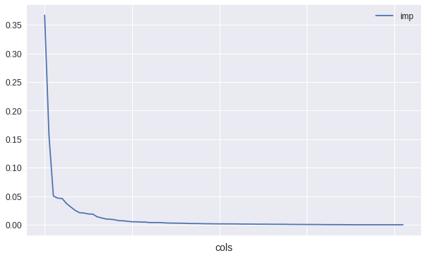
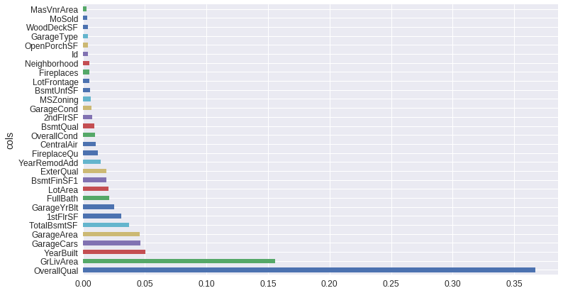
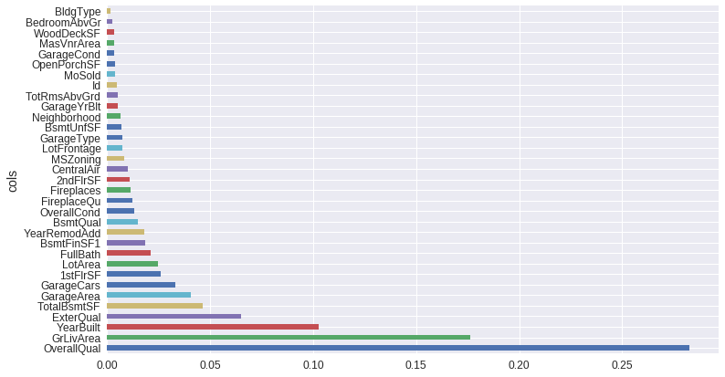
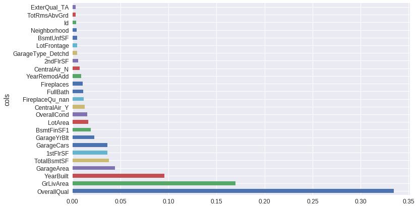
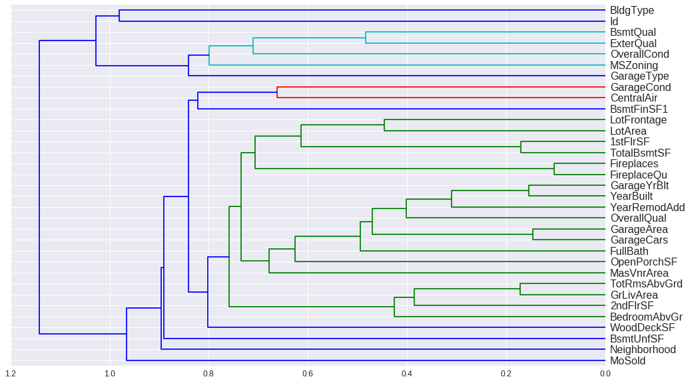
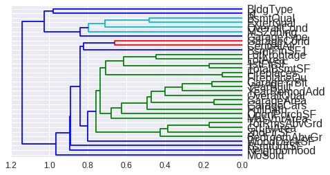
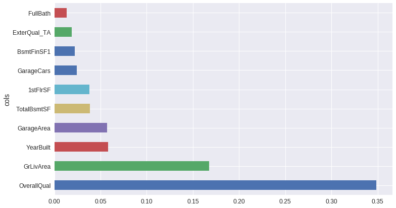
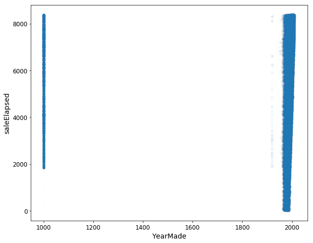

%load_ext autoreload
%autoreload 2
%matplotlib inlineMission Statement
This jupyter notebook attempts to perform initial preprocessing on the house sales data in an attemp to understand the foundational Machine Learning mainly through Random Forests. In this notebook I have tried to perform some hyperparameter tuning on random-forests and plot feature importance and tree dependence plots to interpret the results.
Setting up the installation and configurations
```{python}
#| echo: false
#| output: false
```
!sudo apt-get remove fastai
!pip install Pillow==4.1.1
!pip install "fastai==0.7.0"
!pip install torchtext==0.2.3
!apt-get -qq install -y libsm6 libxext6 && pip install -q -U opencv-python
import cv2
from os import path
from wheel.pep425tags import get_abbr_impl, get_impl_ver, get_abi_tag
platform = '{}{}-{}'.format(get_abbr_impl(), get_impl_ver(), get_abi_tag())
!apt update && apt install -y libsm6 libxext6
accelerator = 'cu80' if path.exists('/opt/bin/nvidia-smi') else 'cpu'
!pip install -q http://download.pytorch.org/whl/{accelerator}/torch-0.3.0.post4-{platform}-linux_x86_64.whl torchvision
import torch
!pip install image
%matplotlib inline
from fastai.imports import *Reading package lists... Done
Building dependency tree
Reading state information... Done
E: Unable to locate package fastai
Collecting Pillow==4.1.1
Downloading https://files.pythonhosted.org/packages/36/e5/88b3d60924a3f8476fa74ec086f5fbaba56dd6cee0d82845f883b6b6dd18/Pillow-4.1.1-cp36-cp36m-manylinux1_x86_64.whl (5.7MB)
100% |████████████████████████████████| 5.7MB 5.3MB/s
Requirement already satisfied: olefile in /usr/local/lib/python3.6/dist-packages (from Pillow==4.1.1) (0.46)
Installing collected packages: Pillow
Found existing installation: Pillow 5.3.0
Uninstalling Pillow-5.3.0:
Successfully uninstalled Pillow-5.3.0
Successfully installed Pillow-4.1.1
Collecting fastai==0.7.0
Downloading https://files.pythonhosted.org/packages/50/6d/9d0d6e17a78b0598d5e8c49a0d03ffc7ff265ae62eca3e2345fab14edb9b/fastai-0.7.0-py3-none-any.whl (112kB)
100% |████████████████████████████████| 122kB 6.2MB/s
Collecting jedi (from fastai==0.7.0)
Downloading https://files.pythonhosted.org/packages/7a/1a/9bd24a185873b998611c2d8d4fb15cd5e8a879ead36355df7ee53e9111bf/jedi-0.13.1-py2.py3-none-any.whl (177kB)
100% |████████████████████████████████| 184kB 4.6MB/s
Requirement already satisfied: tqdm in /usr/local/lib/python3.6/dist-packages (from fastai==0.7.0) (4.28.1)
Requirement already satisfied: jupyter in /usr/local/lib/python3.6/dist-packages (from fastai==0.7.0) (1.0.0)
Requirement already satisfied: cycler in /usr/local/lib/python3.6/dist-packages (from fastai==0.7.0) (0.10.0)
Requirement already satisfied: Pygments in /usr/local/lib/python3.6/dist-packages (from fastai==0.7.0) (2.1.3)
Requirement already satisfied: seaborn in /usr/local/lib/python3.6/dist-packages (from fastai==0.7.0) (0.7.1)
Collecting plotnine (from fastai==0.7.0)
Downloading https://files.pythonhosted.org/packages/84/02/b171c828560aea3a5da1efda464230dac3ef4f4834b88e0bd52ad14a08f0/plotnine-0.5.1-py2.py3-none-any.whl (3.6MB)
100% |████████████████████████████████| 3.6MB 7.7MB/s
Requirement already satisfied: certifi in /usr/local/lib/python3.6/dist-packages (from fastai==0.7.0) (2018.11.29)
Requirement already satisfied: decorator in /usr/local/lib/python3.6/dist-packages (from fastai==0.7.0) (4.3.0)
Collecting bcolz (from fastai==0.7.0)
Downloading https://files.pythonhosted.org/packages/5c/4e/23942de9d5c0fb16f10335fa83e52b431bcb8c0d4a8419c9ac206268c279/bcolz-1.2.1.tar.gz (1.5MB)
100% |████████████████████████████████| 1.5MB 13.8MB/s
Collecting pandas-summary (from fastai==0.7.0)
Downloading https://files.pythonhosted.org/packages/97/55/ea54109a4e7a8e7342bdf23e9382c858224263d984b0d95610568e564f59/pandas_summary-0.0.5-py2.py3-none-any.whl
Requirement already satisfied: matplotlib in /usr/local/lib/python3.6/dist-packages (from fastai==0.7.0) (2.1.2)
Requirement already satisfied: python-dateutil in /usr/local/lib/python3.6/dist-packages (from fastai==0.7.0) (2.5.3)
Collecting torchtext (from fastai==0.7.0)
Downloading https://files.pythonhosted.org/packages/c6/bc/b28b9efb4653c03e597ed207264eea45862b5260f48e9f010b5068d64db1/torchtext-0.3.1-py3-none-any.whl (62kB)
100% |████████████████████████████████| 71kB 15.6MB/s
Requirement already satisfied: wcwidth in /usr/local/lib/python3.6/dist-packages (from fastai==0.7.0) (0.1.7)
Requirement already satisfied: scipy in /usr/local/lib/python3.6/dist-packages (from fastai==0.7.0) (1.1.0)
Requirement already satisfied: traitlets in /usr/local/lib/python3.6/dist-packages (from fastai==0.7.0) (4.3.2)
Collecting isoweek (from fastai==0.7.0)
Downloading https://files.pythonhosted.org/packages/c2/d4/fe7e2637975c476734fcbf53776e650a29680194eb0dd21dbdc020ca92de/isoweek-1.3.3-py2.py3-none-any.whl
Requirement already satisfied: tornado in /usr/local/lib/python3.6/dist-packages (from fastai==0.7.0) (4.5.3)
Requirement already satisfied: ipython in /usr/local/lib/python3.6/dist-packages (from fastai==0.7.0) (5.5.0)
Requirement already satisfied: numpy in /usr/local/lib/python3.6/dist-packages (from fastai==0.7.0) (1.14.6)
Requirement already satisfied: webencodings in /usr/local/lib/python3.6/dist-packages (from fastai==0.7.0) (0.5.1)
Requirement already satisfied: ipywidgets in /usr/local/lib/python3.6/dist-packages (from fastai==0.7.0) (7.4.2)
Requirement already satisfied: ipykernel in /usr/local/lib/python3.6/dist-packages (from fastai==0.7.0) (4.6.1)
Requirement already satisfied: widgetsnbextension in /usr/local/lib/python3.6/dist-packages (from fastai==0.7.0) (3.4.2)
Requirement already satisfied: graphviz in /usr/local/lib/python3.6/dist-packages (from fastai==0.7.0) (0.10.1)
Collecting feather-format (from fastai==0.7.0)
Downloading https://files.pythonhosted.org/packages/08/55/940b97cc6f19a19f5dab9efef2f68a0ce43a7632f858b272391f0b851a7e/feather-format-0.4.0.tar.gz
Requirement already satisfied: Pillow in /usr/local/lib/python3.6/dist-packages (from fastai==0.7.0) (4.1.1)
Requirement already satisfied: pyzmq in /usr/local/lib/python3.6/dist-packages (from fastai==0.7.0) (17.0.0)
Requirement already satisfied: MarkupSafe in /usr/local/lib/python3.6/dist-packages (from fastai==0.7.0) (1.1.0)
Requirement already satisfied: pyparsing in /usr/local/lib/python3.6/dist-packages (from fastai==0.7.0) (2.3.0)
Requirement already satisfied: pytz in /usr/local/lib/python3.6/dist-packages (from fastai==0.7.0) (2018.7)
Requirement already satisfied: Jinja2 in /usr/local/lib/python3.6/dist-packages (from fastai==0.7.0) (2.10)
Requirement already satisfied: opencv-python in /usr/local/lib/python3.6/dist-packages (from fastai==0.7.0) (3.4.4.19)
Requirement already satisfied: entrypoints in /usr/local/lib/python3.6/dist-packages (from fastai==0.7.0) (0.2.3)
Requirement already satisfied: pandas in /usr/local/lib/python3.6/dist-packages (from fastai==0.7.0) (0.22.0)
Requirement already satisfied: ipython-genutils in /usr/local/lib/python3.6/dist-packages (from fastai==0.7.0) (0.2.0)
Requirement already satisfied: pickleshare in /usr/local/lib/python3.6/dist-packages (from fastai==0.7.0) (0.7.5)
Requirement already satisfied: torch<0.4 in /usr/local/lib/python3.6/dist-packages (from fastai==0.7.0) (0.3.0.post4)
Requirement already satisfied: PyYAML in /usr/local/lib/python3.6/dist-packages (from fastai==0.7.0) (3.13)
Requirement already satisfied: html5lib in /usr/local/lib/python3.6/dist-packages (from fastai==0.7.0) (1.0.1)
Requirement already satisfied: ptyprocess in /usr/local/lib/python3.6/dist-packages (from fastai==0.7.0) (0.6.0)
Collecting sklearn-pandas (from fastai==0.7.0)
Downloading https://files.pythonhosted.org/packages/1f/48/4e1461d828baf41d609efaa720d20090ac6ec346b5daad3c88e243e2207e/sklearn_pandas-1.8.0-py2.py3-none-any.whl
Requirement already satisfied: jsonschema in /usr/local/lib/python3.6/dist-packages (from fastai==0.7.0) (2.6.0)
Requirement already satisfied: bleach in /usr/local/lib/python3.6/dist-packages (from fastai==0.7.0) (3.0.2)
Requirement already satisfied: torchvision in /usr/local/lib/python3.6/dist-packages (from fastai==0.7.0) (0.2.1)
Requirement already satisfied: simplegeneric in /usr/local/lib/python3.6/dist-packages (from fastai==0.7.0) (0.8.1)
Requirement already satisfied: testpath in /usr/local/lib/python3.6/dist-packages (from fastai==0.7.0) (0.4.2)
Collecting parso>=0.3.0 (from jedi->fastai==0.7.0)
Downloading https://files.pythonhosted.org/packages/09/51/9c48a46334be50c13d25a3afe55fa05c445699304c5ad32619de953a2305/parso-0.3.1-py2.py3-none-any.whl (88kB)
100% |████████████████████████████████| 92kB 24.6MB/s
Requirement already satisfied: qtconsole in /usr/local/lib/python3.6/dist-packages (from jupyter->fastai==0.7.0) (4.4.3)
Requirement already satisfied: notebook in /usr/local/lib/python3.6/dist-packages (from jupyter->fastai==0.7.0) (5.2.2)
Requirement already satisfied: jupyter-console in /usr/local/lib/python3.6/dist-packages (from jupyter->fastai==0.7.0) (6.0.0)
Requirement already satisfied: nbconvert in /usr/local/lib/python3.6/dist-packages (from jupyter->fastai==0.7.0) (5.4.0)
Requirement already satisfied: six in /usr/local/lib/python3.6/dist-packages (from cycler->fastai==0.7.0) (1.11.0)
Requirement already satisfied: statsmodels>=0.8.0 in /usr/local/lib/python3.6/dist-packages (from plotnine->fastai==0.7.0) (0.8.0)
Collecting mizani>=0.5.2 (from plotnine->fastai==0.7.0)
Downloading https://files.pythonhosted.org/packages/10/3a/1d1c5563b6aeb5fffda694b70d649a0f728a112b79a66b85a6af4814a643/mizani-0.5.2-py2.py3-none-any.whl (58kB)
100% |████████████████████████████████| 61kB 24.2MB/s
Collecting descartes>=1.1.0 (from plotnine->fastai==0.7.0)
Downloading https://files.pythonhosted.org/packages/e5/b6/1ed2eb03989ae574584664985367ba70cd9cf8b32ee8cad0e8aaeac819f3/descartes-1.1.0-py3-none-any.whl
Requirement already satisfied: patsy>=0.4.1 in /usr/local/lib/python3.6/dist-packages (from plotnine->fastai==0.7.0) (0.5.1)
Requirement already satisfied: requests in /usr/local/lib/python3.6/dist-packages (from torchtext->fastai==0.7.0) (2.18.4)
Requirement already satisfied: setuptools>=18.5 in /usr/local/lib/python3.6/dist-packages (from ipython->fastai==0.7.0) (40.6.2)
Requirement already satisfied: pexpect; sys_platform != "win32" in /usr/local/lib/python3.6/dist-packages (from ipython->fastai==0.7.0) (4.6.0)
Requirement already satisfied: prompt-toolkit<2.0.0,>=1.0.4 in /usr/local/lib/python3.6/dist-packages (from ipython->fastai==0.7.0) (1.0.15)
Requirement already satisfied: nbformat>=4.2.0 in /usr/local/lib/python3.6/dist-packages (from ipywidgets->fastai==0.7.0) (4.4.0)
Requirement already satisfied: jupyter-client in /usr/local/lib/python3.6/dist-packages (from ipykernel->fastai==0.7.0) (5.2.4)
Collecting pyarrow>=0.4.0 (from feather-format->fastai==0.7.0)
Downloading https://files.pythonhosted.org/packages/36/94/23135312f97b20d6457294606fb70fad43ef93b7bffe567088ebe3623703/pyarrow-0.11.1-cp36-cp36m-manylinux1_x86_64.whl (11.6MB)
100% |████████████████████████████████| 11.6MB 3.1MB/s
Requirement already satisfied: olefile in /usr/local/lib/python3.6/dist-packages (from Pillow->fastai==0.7.0) (0.46)
Requirement already satisfied: scikit-learn>=0.15.0 in /usr/local/lib/python3.6/dist-packages (from sklearn-pandas->fastai==0.7.0) (0.20.1)
Requirement already satisfied: jupyter-core in /usr/local/lib/python3.6/dist-packages (from qtconsole->jupyter->fastai==0.7.0) (4.4.0)
Requirement already satisfied: terminado>=0.3.3; sys_platform != "win32" in /usr/local/lib/python3.6/dist-packages (from notebook->jupyter->fastai==0.7.0) (0.8.1)
Requirement already satisfied: defusedxml in /usr/local/lib/python3.6/dist-packages (from nbconvert->jupyter->fastai==0.7.0) (0.5.0)
Requirement already satisfied: mistune>=0.8.1 in /usr/local/lib/python3.6/dist-packages (from nbconvert->jupyter->fastai==0.7.0) (0.8.4)
Requirement already satisfied: pandocfilters>=1.4.1 in /usr/local/lib/python3.6/dist-packages (from nbconvert->jupyter->fastai==0.7.0) (1.4.2)
Collecting palettable (from mizani>=0.5.2->plotnine->fastai==0.7.0)
Downloading https://files.pythonhosted.org/packages/56/8a/84537c0354f0d1f03bf644b71bf8e0a50db9c1294181905721a5f3efbf66/palettable-3.1.1-py2.py3-none-any.whl (77kB)
100% |████████████████████████████████| 81kB 25.5MB/s
Requirement already satisfied: urllib3<1.23,>=1.21.1 in /usr/local/lib/python3.6/dist-packages (from requests->torchtext->fastai==0.7.0) (1.22)
Requirement already satisfied: idna<2.7,>=2.5 in /usr/local/lib/python3.6/dist-packages (from requests->torchtext->fastai==0.7.0) (2.6)
Requirement already satisfied: chardet<3.1.0,>=3.0.2 in /usr/local/lib/python3.6/dist-packages (from requests->torchtext->fastai==0.7.0) (3.0.4)
Building wheels for collected packages: bcolz, feather-format
Running setup.py bdist_wheel for bcolz ... done
Stored in directory: /content/.cache/pip/wheels/9f/78/26/fb8c0acb91a100dc8914bf236c4eaa4b207cb876893c40b745
Running setup.py bdist_wheel for feather-format ... done
Stored in directory: /content/.cache/pip/wheels/85/7d/12/2dfa5c0195f921ac935f5e8f27deada74972edc0ae9988a9c1
Successfully built bcolz feather-format
mizani 0.5.2 has requirement pandas>=0.23.4, but you'll have pandas 0.22.0 which is incompatible.
plotnine 0.5.1 has requirement matplotlib>=3.0.0, but you'll have matplotlib 2.1.2 which is incompatible.
plotnine 0.5.1 has requirement pandas>=0.23.4, but you'll have pandas 0.22.0 which is incompatible.
Installing collected packages: parso, jedi, palettable, mizani, descartes, plotnine, bcolz, pandas-summary, torchtext, isoweek, pyarrow, feather-format, sklearn-pandas, fastai
Found existing installation: fastai 1.0.38.dev0
Uninstalling fastai-1.0.38.dev0:
Successfully uninstalled fastai-1.0.38.dev0
Successfully installed bcolz-1.2.1 descartes-1.1.0 fastai-0.7.0 feather-format-0.4.0 isoweek-1.3.3 jedi-0.13.1 mizani-0.5.2 palettable-3.1.1 pandas-summary-0.0.5 parso-0.3.1 plotnine-0.5.1 pyarrow-0.11.1 sklearn-pandas-1.8.0 torchtext-0.3.1
Collecting torchtext==0.2.3
Downloading https://files.pythonhosted.org/packages/78/90/474d5944d43001a6e72b9aaed5c3e4f77516fbef2317002da2096fd8b5ea/torchtext-0.2.3.tar.gz (42kB)
100% |████████████████████████████████| 51kB 3.5MB/s
Requirement already satisfied: tqdm in /usr/local/lib/python3.6/dist-packages (from torchtext==0.2.3) (4.28.1)
Requirement already satisfied: requests in /usr/local/lib/python3.6/dist-packages (from torchtext==0.2.3) (2.18.4)
Requirement already satisfied: idna<2.7,>=2.5 in /usr/local/lib/python3.6/dist-packages (from requests->torchtext==0.2.3) (2.6)
Requirement already satisfied: urllib3<1.23,>=1.21.1 in /usr/local/lib/python3.6/dist-packages (from requests->torchtext==0.2.3) (1.22)
Requirement already satisfied: chardet<3.1.0,>=3.0.2 in /usr/local/lib/python3.6/dist-packages (from requests->torchtext==0.2.3) (3.0.4)
Requirement already satisfied: certifi>=2017.4.17 in /usr/local/lib/python3.6/dist-packages (from requests->torchtext==0.2.3) (2018.11.29)
Building wheels for collected packages: torchtext
Running setup.py bdist_wheel for torchtext ... done
Stored in directory: /content/.cache/pip/wheels/42/a6/f4/b267328bde6bb680094a0c173e8e5627ccc99543abded97204
Successfully built torchtext
Installing collected packages: torchtext
Found existing installation: torchtext 0.3.1
Uninstalling torchtext-0.3.1:
Successfully uninstalled torchtext-0.3.1
Successfully installed torchtext-0.2.3
Ign:1 https://developer.download.nvidia.com/compute/cuda/repos/ubuntu1710/x86_64 InRelease
Ign:2 https://developer.download.nvidia.com/compute/machine-learning/repos/ubuntu1604/x86_64 InRelease
Hit:3 https://developer.download.nvidia.com/compute/cuda/repos/ubuntu1710/x86_64 Release
Hit:4 http://security.ubuntu.com/ubuntu bionic-security InRelease
Hit:5 https://developer.download.nvidia.com/compute/machine-learning/repos/ubuntu1604/x86_64 Release
Hit:6 http://ppa.launchpad.net/graphics-drivers/ppa/ubuntu bionic InRelease
Hit:7 http://archive.ubuntu.com/ubuntu bionic InRelease
Hit:9 http://archive.ubuntu.com/ubuntu bionic-updates InRelease
Hit:10 http://archive.ubuntu.com/ubuntu bionic-backports InRelease
Reading package lists... Done
Building dependency tree
Reading state information... Done
13 packages can be upgraded. Run 'apt list --upgradable' to see them.
Reading package lists... Done
Building dependency tree
Reading state information... Done
libsm6 is already the newest version (2:1.2.2-1).
libxext6 is already the newest version (2:1.3.3-1).
0 upgraded, 0 newly installed, 0 to remove and 13 not upgraded.
Requirement already satisfied: image in /usr/local/lib/python3.6/dist-packages (1.5.27)
Requirement already satisfied: pillow in /usr/local/lib/python3.6/dist-packages (from image) (4.1.1)
Requirement already satisfied: django in /usr/local/lib/python3.6/dist-packages (from image) (2.1.4)
Requirement already satisfied: olefile in /usr/local/lib/python3.6/dist-packages (from pillow->image) (0.46)
Requirement already satisfied: pytz in /usr/local/lib/python3.6/dist-packages (from django->image) (2018.7)```{python}
#| echo: false
#| output: false
```
from fastai.imports import *
from fastai.structured import *
from pandas_summary import DataFrameSummary
from sklearn.ensemble import RandomForestRegressor, RandomForestClassifier
from IPython.display import display
from sklearn import metricsPATH = "data/HousePrice/"cd ../content/clouderizer/fast.ai!ls {PATH}
!head data/HousePrice/train.csvdata_description.txt sample_submission.csv.gz test.csv.gz train.csv.gz
sample_submission.csv test.csv train.csv
Id,MSSubClass,MSZoning,LotFrontage,LotArea,Street,Alley,LotShape,LandContour,Utilities,LotConfig,LandSlope,Neighborhood,Condition1,Condition2,BldgType,HouseStyle,OverallQual,OverallCond,YearBuilt,YearRemodAdd,RoofStyle,RoofMatl,Exterior1st,Exterior2nd,MasVnrType,MasVnrArea,ExterQual,ExterCond,Foundation,BsmtQual,BsmtCond,BsmtExposure,BsmtFinType1,BsmtFinSF1,BsmtFinType2,BsmtFinSF2,BsmtUnfSF,TotalBsmtSF,Heating,HeatingQC,CentralAir,Electrical,1stFlrSF,2ndFlrSF,LowQualFinSF,GrLivArea,BsmtFullBath,BsmtHalfBath,FullBath,HalfBath,BedroomAbvGr,KitchenAbvGr,KitchenQual,TotRmsAbvGrd,Functional,Fireplaces,FireplaceQu,GarageType,GarageYrBlt,GarageFinish,GarageCars,GarageArea,GarageQual,GarageCond,PavedDrive,WoodDeckSF,OpenPorchSF,EnclosedPorch,3SsnPorch,ScreenPorch,PoolArea,PoolQC,Fence,MiscFeature,MiscVal,MoSold,YrSold,SaleType,SaleCondition,SalePrice
1,60,RL,65,8450,Pave,NA,Reg,Lvl,AllPub,Inside,Gtl,CollgCr,Norm,Norm,1Fam,2Story,7,5,2003,2003,Gable,CompShg,VinylSd,VinylSd,BrkFace,196,Gd,TA,PConc,Gd,TA,No,GLQ,706,Unf,0,150,856,GasA,Ex,Y,SBrkr,856,854,0,1710,1,0,2,1,3,1,Gd,8,Typ,0,NA,Attchd,2003,RFn,2,548,TA,TA,Y,0,61,0,0,0,0,NA,NA,NA,0,2,2008,WD,Normal,208500
2,20,RL,80,9600,Pave,NA,Reg,Lvl,AllPub,FR2,Gtl,Veenker,Feedr,Norm,1Fam,1Story,6,8,1976,1976,Gable,CompShg,MetalSd,MetalSd,None,0,TA,TA,CBlock,Gd,TA,Gd,ALQ,978,Unf,0,284,1262,GasA,Ex,Y,SBrkr,1262,0,0,1262,0,1,2,0,3,1,TA,6,Typ,1,TA,Attchd,1976,RFn,2,460,TA,TA,Y,298,0,0,0,0,0,NA,NA,NA,0,5,2007,WD,Normal,181500
3,60,RL,68,11250,Pave,NA,IR1,Lvl,AllPub,Inside,Gtl,CollgCr,Norm,Norm,1Fam,2Story,7,5,2001,2002,Gable,CompShg,VinylSd,VinylSd,BrkFace,162,Gd,TA,PConc,Gd,TA,Mn,GLQ,486,Unf,0,434,920,GasA,Ex,Y,SBrkr,920,866,0,1786,1,0,2,1,3,1,Gd,6,Typ,1,TA,Attchd,2001,RFn,2,608,TA,TA,Y,0,42,0,0,0,0,NA,NA,NA,0,9,2008,WD,Normal,223500
4,70,RL,60,9550,Pave,NA,IR1,Lvl,AllPub,Corner,Gtl,Crawfor,Norm,Norm,1Fam,2Story,7,5,1915,1970,Gable,CompShg,Wd Sdng,Wd Shng,None,0,TA,TA,BrkTil,TA,Gd,No,ALQ,216,Unf,0,540,756,GasA,Gd,Y,SBrkr,961,756,0,1717,1,0,1,0,3,1,Gd,7,Typ,1,Gd,Detchd,1998,Unf,3,642,TA,TA,Y,0,35,272,0,0,0,NA,NA,NA,0,2,2006,WD,Abnorml,140000
5,60,RL,84,14260,Pave,NA,IR1,Lvl,AllPub,FR2,Gtl,NoRidge,Norm,Norm,1Fam,2Story,8,5,2000,2000,Gable,CompShg,VinylSd,VinylSd,BrkFace,350,Gd,TA,PConc,Gd,TA,Av,GLQ,655,Unf,0,490,1145,GasA,Ex,Y,SBrkr,1145,1053,0,2198,1,0,2,1,4,1,Gd,9,Typ,1,TA,Attchd,2000,RFn,3,836,TA,TA,Y,192,84,0,0,0,0,NA,NA,NA,0,12,2008,WD,Normal,250000
6,50,RL,85,14115,Pave,NA,IR1,Lvl,AllPub,Inside,Gtl,Mitchel,Norm,Norm,1Fam,1.5Fin,5,5,1993,1995,Gable,CompShg,VinylSd,VinylSd,None,0,TA,TA,Wood,Gd,TA,No,GLQ,732,Unf,0,64,796,GasA,Ex,Y,SBrkr,796,566,0,1362,1,0,1,1,1,1,TA,5,Typ,0,NA,Attchd,1993,Unf,2,480,TA,TA,Y,40,30,0,320,0,0,NA,MnPrv,Shed,700,10,2009,WD,Normal,143000
7,20,RL,75,10084,Pave,NA,Reg,Lvl,AllPub,Inside,Gtl,Somerst,Norm,Norm,1Fam,1Story,8,5,2004,2005,Gable,CompShg,VinylSd,VinylSd,Stone,186,Gd,TA,PConc,Ex,TA,Av,GLQ,1369,Unf,0,317,1686,GasA,Ex,Y,SBrkr,1694,0,0,1694,1,0,2,0,3,1,Gd,7,Typ,1,Gd,Attchd,2004,RFn,2,636,TA,TA,Y,255,57,0,0,0,0,NA,NA,NA,0,8,2007,WD,Normal,307000
8,60,RL,NA,10382,Pave,NA,IR1,Lvl,AllPub,Corner,Gtl,NWAmes,PosN,Norm,1Fam,2Story,7,6,1973,1973,Gable,CompShg,HdBoard,HdBoard,Stone,240,TA,TA,CBlock,Gd,TA,Mn,ALQ,859,BLQ,32,216,1107,GasA,Ex,Y,SBrkr,1107,983,0,2090,1,0,2,1,3,1,TA,7,Typ,2,TA,Attchd,1973,RFn,2,484,TA,TA,Y,235,204,228,0,0,0,NA,NA,Shed,350,11,2009,WD,Normal,200000
9,50,RM,51,6120,Pave,NA,Reg,Lvl,AllPub,Inside,Gtl,OldTown,Artery,Norm,1Fam,1.5Fin,7,5,1931,1950,Gable,CompShg,BrkFace,Wd Shng,None,0,TA,TA,BrkTil,TA,TA,No,Unf,0,Unf,0,952,952,GasA,Gd,Y,FuseF,1022,752,0,1774,0,0,2,0,2,2,TA,8,Min1,2,TA,Detchd,1931,Unf,2,468,Fa,TA,Y,90,0,205,0,0,0,NA,NA,NA,0,4,2008,WD,Abnorml,129900- {} indicates a bash command
- head displays the column names and the first five rows of the dataset
df_raw = pd.read_csv(f'{PATH}train.csv', low_memory=False,
)- f’{}..’ allows to execute the string as well as python command Example Name = “Kashish” print(f’Hello {Name} !’)
-output :- Hello Kashish
def display_all(df):
with pd.option_context("display.max_rows", 1000, "display.max_columns", 1000):
display(df)
display_all(df_raw.tail().T)
display_all(df_raw.describe(include='all').T)| 1455 | 1456 | 1457 | 1458 | 1459 | |
|---|---|---|---|---|---|
| Id | 1456 | 1457 | 1458 | 1459 | 1460 |
| MSSubClass | 60 | 20 | 70 | 20 | 20 |
| MSZoning | RL | RL | RL | RL | RL |
| LotFrontage | 62 | 85 | 66 | 68 | 75 |
| LotArea | 7917 | 13175 | 9042 | 9717 | 9937 |
| Street | Pave | Pave | Pave | Pave | Pave |
| Alley | NaN | NaN | NaN | NaN | NaN |
| LotShape | Reg | Reg | Reg | Reg | Reg |
| LandContour | Lvl | Lvl | Lvl | Lvl | Lvl |
| Utilities | AllPub | AllPub | AllPub | AllPub | AllPub |
| LotConfig | Inside | Inside | Inside | Inside | Inside |
| LandSlope | Gtl | Gtl | Gtl | Gtl | Gtl |
| Neighborhood | Gilbert | NWAmes | Crawfor | NAmes | Edwards |
| Condition1 | Norm | Norm | Norm | Norm | Norm |
| Condition2 | Norm | Norm | Norm | Norm | Norm |
| BldgType | 1Fam | 1Fam | 1Fam | 1Fam | 1Fam |
| HouseStyle | 2Story | 1Story | 2Story | 1Story | 1Story |
| OverallQual | 6 | 6 | 7 | 5 | 5 |
| OverallCond | 5 | 6 | 9 | 6 | 6 |
| YearBuilt | 1999 | 1978 | 1941 | 1950 | 1965 |
| YearRemodAdd | 2000 | 1988 | 2006 | 1996 | 1965 |
| RoofStyle | Gable | Gable | Gable | Hip | Gable |
| RoofMatl | CompShg | CompShg | CompShg | CompShg | CompShg |
| Exterior1st | VinylSd | Plywood | CemntBd | MetalSd | HdBoard |
| Exterior2nd | VinylSd | Plywood | CmentBd | MetalSd | HdBoard |
| MasVnrType | None | Stone | None | None | None |
| MasVnrArea | 0 | 119 | 0 | 0 | 0 |
| ExterQual | TA | TA | Ex | TA | Gd |
| ExterCond | TA | TA | Gd | TA | TA |
| Foundation | PConc | CBlock | Stone | CBlock | CBlock |
| BsmtQual | Gd | Gd | TA | TA | TA |
| BsmtCond | TA | TA | Gd | TA | TA |
| BsmtExposure | No | No | No | Mn | No |
| BsmtFinType1 | Unf | ALQ | GLQ | GLQ | BLQ |
| BsmtFinSF1 | 0 | 790 | 275 | 49 | 830 |
| BsmtFinType2 | Unf | Rec | Unf | Rec | LwQ |
| BsmtFinSF2 | 0 | 163 | 0 | 1029 | 290 |
| BsmtUnfSF | 953 | 589 | 877 | 0 | 136 |
| TotalBsmtSF | 953 | 1542 | 1152 | 1078 | 1256 |
| Heating | GasA | GasA | GasA | GasA | GasA |
| HeatingQC | Ex | TA | Ex | Gd | Gd |
| CentralAir | Y | Y | Y | Y | Y |
| Electrical | SBrkr | SBrkr | SBrkr | FuseA | SBrkr |
| 1stFlrSF | 953 | 2073 | 1188 | 1078 | 1256 |
| 2ndFlrSF | 694 | 0 | 1152 | 0 | 0 |
| LowQualFinSF | 0 | 0 | 0 | 0 | 0 |
| GrLivArea | 1647 | 2073 | 2340 | 1078 | 1256 |
| BsmtFullBath | 0 | 1 | 0 | 1 | 1 |
| BsmtHalfBath | 0 | 0 | 0 | 0 | 0 |
| FullBath | 2 | 2 | 2 | 1 | 1 |
| HalfBath | 1 | 0 | 0 | 0 | 1 |
| BedroomAbvGr | 3 | 3 | 4 | 2 | 3 |
| KitchenAbvGr | 1 | 1 | 1 | 1 | 1 |
| KitchenQual | TA | TA | Gd | Gd | TA |
| TotRmsAbvGrd | 7 | 7 | 9 | 5 | 6 |
| Functional | Typ | Min1 | Typ | Typ | Typ |
| Fireplaces | 1 | 2 | 2 | 0 | 0 |
| FireplaceQu | TA | TA | Gd | NaN | NaN |
| GarageType | Attchd | Attchd | Attchd | Attchd | Attchd |
| GarageYrBlt | 1999 | 1978 | 1941 | 1950 | 1965 |
| GarageFinish | RFn | Unf | RFn | Unf | Fin |
| GarageCars | 2 | 2 | 1 | 1 | 1 |
| GarageArea | 460 | 500 | 252 | 240 | 276 |
| GarageQual | TA | TA | TA | TA | TA |
| GarageCond | TA | TA | TA | TA | TA |
| PavedDrive | Y | Y | Y | Y | Y |
| WoodDeckSF | 0 | 349 | 0 | 366 | 736 |
| OpenPorchSF | 40 | 0 | 60 | 0 | 68 |
| EnclosedPorch | 0 | 0 | 0 | 112 | 0 |
| 3SsnPorch | 0 | 0 | 0 | 0 | 0 |
| ScreenPorch | 0 | 0 | 0 | 0 | 0 |
| PoolArea | 0 | 0 | 0 | 0 | 0 |
| PoolQC | NaN | NaN | NaN | NaN | NaN |
| Fence | NaN | MnPrv | GdPrv | NaN | NaN |
| MiscFeature | NaN | NaN | Shed | NaN | NaN |
| MiscVal | 0 | 0 | 2500 | 0 | 0 |
| MoSold | 8 | 2 | 5 | 4 | 6 |
| YrSold | 2007 | 2010 | 2010 | 2010 | 2008 |
| SaleType | WD | WD | WD | WD | WD |
| SaleCondition | Normal | Normal | Normal | Normal | Normal |
| SalePrice | 175000 | 210000 | 266500 | 142125 | 147500 |
| count | unique | top | freq | mean | std | min | 25% | 50% | 75% | max | |
|---|---|---|---|---|---|---|---|---|---|---|---|
| Id | 1460 | NaN | NaN | NaN | 730.5 | 421.61 | 1 | 365.75 | 730.5 | 1095.25 | 1460 |
| MSSubClass | 1460 | NaN | NaN | NaN | 56.8973 | 42.3006 | 20 | 20 | 50 | 70 | 190 |
| MSZoning | 1460 | 5 | RL | 1151 | NaN | NaN | NaN | NaN | NaN | NaN | NaN |
| LotFrontage | 1201 | NaN | NaN | NaN | 70.05 | 24.2848 | 21 | 59 | 69 | 80 | 313 |
| LotArea | 1460 | NaN | NaN | NaN | 10516.8 | 9981.26 | 1300 | 7553.5 | 9478.5 | 11601.5 | 215245 |
| Street | 1460 | 2 | Pave | 1454 | NaN | NaN | NaN | NaN | NaN | NaN | NaN |
| Alley | 91 | 2 | Grvl | 50 | NaN | NaN | NaN | NaN | NaN | NaN | NaN |
| LotShape | 1460 | 4 | Reg | 925 | NaN | NaN | NaN | NaN | NaN | NaN | NaN |
| LandContour | 1460 | 4 | Lvl | 1311 | NaN | NaN | NaN | NaN | NaN | NaN | NaN |
| Utilities | 1460 | 2 | AllPub | 1459 | NaN | NaN | NaN | NaN | NaN | NaN | NaN |
| LotConfig | 1460 | 5 | Inside | 1052 | NaN | NaN | NaN | NaN | NaN | NaN | NaN |
| LandSlope | 1460 | 3 | Gtl | 1382 | NaN | NaN | NaN | NaN | NaN | NaN | NaN |
| Neighborhood | 1460 | 25 | NAmes | 225 | NaN | NaN | NaN | NaN | NaN | NaN | NaN |
| Condition1 | 1460 | 9 | Norm | 1260 | NaN | NaN | NaN | NaN | NaN | NaN | NaN |
| Condition2 | 1460 | 8 | Norm | 1445 | NaN | NaN | NaN | NaN | NaN | NaN | NaN |
| BldgType | 1460 | 5 | 1Fam | 1220 | NaN | NaN | NaN | NaN | NaN | NaN | NaN |
| HouseStyle | 1460 | 8 | 1Story | 726 | NaN | NaN | NaN | NaN | NaN | NaN | NaN |
| OverallQual | 1460 | NaN | NaN | NaN | 6.09932 | 1.383 | 1 | 5 | 6 | 7 | 10 |
| OverallCond | 1460 | NaN | NaN | NaN | 5.57534 | 1.1128 | 1 | 5 | 5 | 6 | 9 |
| YearBuilt | 1460 | NaN | NaN | NaN | 1971.27 | 30.2029 | 1872 | 1954 | 1973 | 2000 | 2010 |
| YearRemodAdd | 1460 | NaN | NaN | NaN | 1984.87 | 20.6454 | 1950 | 1967 | 1994 | 2004 | 2010 |
| RoofStyle | 1460 | 6 | Gable | 1141 | NaN | NaN | NaN | NaN | NaN | NaN | NaN |
| RoofMatl | 1460 | 8 | CompShg | 1434 | NaN | NaN | NaN | NaN | NaN | NaN | NaN |
| Exterior1st | 1460 | 15 | VinylSd | 515 | NaN | NaN | NaN | NaN | NaN | NaN | NaN |
| Exterior2nd | 1460 | 16 | VinylSd | 504 | NaN | NaN | NaN | NaN | NaN | NaN | NaN |
| MasVnrType | 1452 | 4 | None | 864 | NaN | NaN | NaN | NaN | NaN | NaN | NaN |
| MasVnrArea | 1452 | NaN | NaN | NaN | 103.685 | 181.066 | 0 | 0 | 0 | 166 | 1600 |
| ExterQual | 1460 | 4 | TA | 906 | NaN | NaN | NaN | NaN | NaN | NaN | NaN |
| ExterCond | 1460 | 5 | TA | 1282 | NaN | NaN | NaN | NaN | NaN | NaN | NaN |
| Foundation | 1460 | 6 | PConc | 647 | NaN | NaN | NaN | NaN | NaN | NaN | NaN |
| BsmtQual | 1423 | 4 | TA | 649 | NaN | NaN | NaN | NaN | NaN | NaN | NaN |
| BsmtCond | 1423 | 4 | TA | 1311 | NaN | NaN | NaN | NaN | NaN | NaN | NaN |
| BsmtExposure | 1422 | 4 | No | 953 | NaN | NaN | NaN | NaN | NaN | NaN | NaN |
| BsmtFinType1 | 1423 | 6 | Unf | 430 | NaN | NaN | NaN | NaN | NaN | NaN | NaN |
| BsmtFinSF1 | 1460 | NaN | NaN | NaN | 443.64 | 456.098 | 0 | 0 | 383.5 | 712.25 | 5644 |
| BsmtFinType2 | 1422 | 6 | Unf | 1256 | NaN | NaN | NaN | NaN | NaN | NaN | NaN |
| BsmtFinSF2 | 1460 | NaN | NaN | NaN | 46.5493 | 161.319 | 0 | 0 | 0 | 0 | 1474 |
| BsmtUnfSF | 1460 | NaN | NaN | NaN | 567.24 | 441.867 | 0 | 223 | 477.5 | 808 | 2336 |
| TotalBsmtSF | 1460 | NaN | NaN | NaN | 1057.43 | 438.705 | 0 | 795.75 | 991.5 | 1298.25 | 6110 |
| Heating | 1460 | 6 | GasA | 1428 | NaN | NaN | NaN | NaN | NaN | NaN | NaN |
| HeatingQC | 1460 | 5 | Ex | 741 | NaN | NaN | NaN | NaN | NaN | NaN | NaN |
| CentralAir | 1460 | 2 | Y | 1365 | NaN | NaN | NaN | NaN | NaN | NaN | NaN |
| Electrical | 1459 | 5 | SBrkr | 1334 | NaN | NaN | NaN | NaN | NaN | NaN | NaN |
| 1stFlrSF | 1460 | NaN | NaN | NaN | 1162.63 | 386.588 | 334 | 882 | 1087 | 1391.25 | 4692 |
| 2ndFlrSF | 1460 | NaN | NaN | NaN | 346.992 | 436.528 | 0 | 0 | 0 | 728 | 2065 |
| LowQualFinSF | 1460 | NaN | NaN | NaN | 5.84452 | 48.6231 | 0 | 0 | 0 | 0 | 572 |
| GrLivArea | 1460 | NaN | NaN | NaN | 1515.46 | 525.48 | 334 | 1129.5 | 1464 | 1776.75 | 5642 |
| BsmtFullBath | 1460 | NaN | NaN | NaN | 0.425342 | 0.518911 | 0 | 0 | 0 | 1 | 3 |
| BsmtHalfBath | 1460 | NaN | NaN | NaN | 0.0575342 | 0.238753 | 0 | 0 | 0 | 0 | 2 |
| FullBath | 1460 | NaN | NaN | NaN | 1.56507 | 0.550916 | 0 | 1 | 2 | 2 | 3 |
| HalfBath | 1460 | NaN | NaN | NaN | 0.382877 | 0.502885 | 0 | 0 | 0 | 1 | 2 |
| BedroomAbvGr | 1460 | NaN | NaN | NaN | 2.86644 | 0.815778 | 0 | 2 | 3 | 3 | 8 |
| KitchenAbvGr | 1460 | NaN | NaN | NaN | 1.04658 | 0.220338 | 0 | 1 | 1 | 1 | 3 |
| KitchenQual | 1460 | 4 | TA | 735 | NaN | NaN | NaN | NaN | NaN | NaN | NaN |
| TotRmsAbvGrd | 1460 | NaN | NaN | NaN | 6.51781 | 1.62539 | 2 | 5 | 6 | 7 | 14 |
| Functional | 1460 | 7 | Typ | 1360 | NaN | NaN | NaN | NaN | NaN | NaN | NaN |
| Fireplaces | 1460 | NaN | NaN | NaN | 0.613014 | 0.644666 | 0 | 0 | 1 | 1 | 3 |
| FireplaceQu | 770 | 5 | Gd | 380 | NaN | NaN | NaN | NaN | NaN | NaN | NaN |
| GarageType | 1379 | 6 | Attchd | 870 | NaN | NaN | NaN | NaN | NaN | NaN | NaN |
| GarageYrBlt | 1379 | NaN | NaN | NaN | 1978.51 | 24.6897 | 1900 | 1961 | 1980 | 2002 | 2010 |
| GarageFinish | 1379 | 3 | Unf | 605 | NaN | NaN | NaN | NaN | NaN | NaN | NaN |
| GarageCars | 1460 | NaN | NaN | NaN | 1.76712 | 0.747315 | 0 | 1 | 2 | 2 | 4 |
| GarageArea | 1460 | NaN | NaN | NaN | 472.98 | 213.805 | 0 | 334.5 | 480 | 576 | 1418 |
| GarageQual | 1379 | 5 | TA | 1311 | NaN | NaN | NaN | NaN | NaN | NaN | NaN |
| GarageCond | 1379 | 5 | TA | 1326 | NaN | NaN | NaN | NaN | NaN | NaN | NaN |
| PavedDrive | 1460 | 3 | Y | 1340 | NaN | NaN | NaN | NaN | NaN | NaN | NaN |
| WoodDeckSF | 1460 | NaN | NaN | NaN | 94.2445 | 125.339 | 0 | 0 | 0 | 168 | 857 |
| OpenPorchSF | 1460 | NaN | NaN | NaN | 46.6603 | 66.256 | 0 | 0 | 25 | 68 | 547 |
| EnclosedPorch | 1460 | NaN | NaN | NaN | 21.9541 | 61.1191 | 0 | 0 | 0 | 0 | 552 |
| 3SsnPorch | 1460 | NaN | NaN | NaN | 3.40959 | 29.3173 | 0 | 0 | 0 | 0 | 508 |
| ScreenPorch | 1460 | NaN | NaN | NaN | 15.061 | 55.7574 | 0 | 0 | 0 | 0 | 480 |
| PoolArea | 1460 | NaN | NaN | NaN | 2.7589 | 40.1773 | 0 | 0 | 0 | 0 | 738 |
| PoolQC | 7 | 3 | Gd | 3 | NaN | NaN | NaN | NaN | NaN | NaN | NaN |
| Fence | 281 | 4 | MnPrv | 157 | NaN | NaN | NaN | NaN | NaN | NaN | NaN |
| MiscFeature | 54 | 4 | Shed | 49 | NaN | NaN | NaN | NaN | NaN | NaN | NaN |
| MiscVal | 1460 | NaN | NaN | NaN | 43.489 | 496.123 | 0 | 0 | 0 | 0 | 15500 |
| MoSold | 1460 | NaN | NaN | NaN | 6.32192 | 2.70363 | 1 | 5 | 6 | 8 | 12 |
| YrSold | 1460 | NaN | NaN | NaN | 2007.82 | 1.3281 | 2006 | 2007 | 2008 | 2009 | 2010 |
| SaleType | 1460 | 9 | WD | 1267 | NaN | NaN | NaN | NaN | NaN | NaN | NaN |
| SaleCondition | 1460 | 6 | Normal | 1198 | NaN | NaN | NaN | NaN | NaN | NaN | NaN |
| SalePrice | 1460 | NaN | NaN | NaN | 180921 | 79442.5 | 34900 | 129975 | 163000 | 214000 | 755000 |
df_raw.SalePrice = np.log(df_raw.SalePrice)display_all will display in a tabular format
.tail().T implies transpose
We cannot fit a random forest directly as all the objects are of different data type, so we must convert all to numeric.Moreover, we need to fill in missing values and inabsurdly select categorical variables.
Hence we move to the preprocessing stage
train_cats(df_raw)df_raw.LotShape.cat.categoriesIndex(['IR1', 'IR2', 'IR3', 'Reg'], dtype='object')df_raw.LotShape.cat.set_categories(['IR1', 'IR2', 'IR3','Reg'], ordered=True, inplace=True)df_raw.LandContour.cat.categoriesIndex(['Bnk', 'HLS', 'Low', 'Lvl'], dtype='object')display_all(df_raw.head())| Id | MSSubClass | MSZoning | LotFrontage | LotArea | Street | Alley | LotShape | LandContour | Utilities | LotConfig | LandSlope | Neighborhood | Condition1 | Condition2 | BldgType | HouseStyle | OverallQual | OverallCond | YearBuilt | YearRemodAdd | RoofStyle | RoofMatl | Exterior1st | Exterior2nd | MasVnrType | MasVnrArea | ExterQual | ExterCond | Foundation | BsmtQual | BsmtCond | BsmtExposure | BsmtFinType1 | BsmtFinSF1 | BsmtFinType2 | BsmtFinSF2 | BsmtUnfSF | TotalBsmtSF | Heating | HeatingQC | CentralAir | Electrical | 1stFlrSF | 2ndFlrSF | LowQualFinSF | GrLivArea | BsmtFullBath | BsmtHalfBath | FullBath | HalfBath | BedroomAbvGr | KitchenAbvGr | KitchenQual | TotRmsAbvGrd | Functional | Fireplaces | FireplaceQu | GarageType | GarageYrBlt | GarageFinish | GarageCars | GarageArea | GarageQual | GarageCond | PavedDrive | WoodDeckSF | OpenPorchSF | EnclosedPorch | 3SsnPorch | ScreenPorch | PoolArea | PoolQC | Fence | MiscFeature | MiscVal | MoSold | YrSold | SaleType | SaleCondition | SalePrice | |
|---|---|---|---|---|---|---|---|---|---|---|---|---|---|---|---|---|---|---|---|---|---|---|---|---|---|---|---|---|---|---|---|---|---|---|---|---|---|---|---|---|---|---|---|---|---|---|---|---|---|---|---|---|---|---|---|---|---|---|---|---|---|---|---|---|---|---|---|---|---|---|---|---|---|---|---|---|---|---|---|---|---|
| 0 | 1 | 60 | RL | 65.0 | 8450 | Pave | NaN | Reg | Lvl | AllPub | Inside | Gtl | CollgCr | Norm | Norm | 1Fam | 2Story | 7 | 5 | 2003 | 2003 | Gable | CompShg | VinylSd | VinylSd | BrkFace | 196.0 | Gd | TA | PConc | Gd | TA | No | GLQ | 706 | Unf | 0 | 150 | 856 | GasA | Ex | Y | SBrkr | 856 | 854 | 0 | 1710 | 1 | 0 | 2 | 1 | 3 | 1 | Gd | 8 | Typ | 0 | NaN | Attchd | 2003.0 | RFn | 2 | 548 | TA | TA | Y | 0 | 61 | 0 | 0 | 0 | 0 | NaN | NaN | NaN | 0 | 2 | 2008 | WD | Normal | 12.247694 |
| 1 | 2 | 20 | RL | 80.0 | 9600 | Pave | NaN | Reg | Lvl | AllPub | FR2 | Gtl | Veenker | Feedr | Norm | 1Fam | 1Story | 6 | 8 | 1976 | 1976 | Gable | CompShg | MetalSd | MetalSd | None | 0.0 | TA | TA | CBlock | Gd | TA | Gd | ALQ | 978 | Unf | 0 | 284 | 1262 | GasA | Ex | Y | SBrkr | 1262 | 0 | 0 | 1262 | 0 | 1 | 2 | 0 | 3 | 1 | TA | 6 | Typ | 1 | TA | Attchd | 1976.0 | RFn | 2 | 460 | TA | TA | Y | 298 | 0 | 0 | 0 | 0 | 0 | NaN | NaN | NaN | 0 | 5 | 2007 | WD | Normal | 12.109011 |
| 2 | 3 | 60 | RL | 68.0 | 11250 | Pave | NaN | IR1 | Lvl | AllPub | Inside | Gtl | CollgCr | Norm | Norm | 1Fam | 2Story | 7 | 5 | 2001 | 2002 | Gable | CompShg | VinylSd | VinylSd | BrkFace | 162.0 | Gd | TA | PConc | Gd | TA | Mn | GLQ | 486 | Unf | 0 | 434 | 920 | GasA | Ex | Y | SBrkr | 920 | 866 | 0 | 1786 | 1 | 0 | 2 | 1 | 3 | 1 | Gd | 6 | Typ | 1 | TA | Attchd | 2001.0 | RFn | 2 | 608 | TA | TA | Y | 0 | 42 | 0 | 0 | 0 | 0 | NaN | NaN | NaN | 0 | 9 | 2008 | WD | Normal | 12.317167 |
| 3 | 4 | 70 | RL | 60.0 | 9550 | Pave | NaN | IR1 | Lvl | AllPub | Corner | Gtl | Crawfor | Norm | Norm | 1Fam | 2Story | 7 | 5 | 1915 | 1970 | Gable | CompShg | Wd Sdng | Wd Shng | None | 0.0 | TA | TA | BrkTil | TA | Gd | No | ALQ | 216 | Unf | 0 | 540 | 756 | GasA | Gd | Y | SBrkr | 961 | 756 | 0 | 1717 | 1 | 0 | 1 | 0 | 3 | 1 | Gd | 7 | Typ | 1 | Gd | Detchd | 1998.0 | Unf | 3 | 642 | TA | TA | Y | 0 | 35 | 272 | 0 | 0 | 0 | NaN | NaN | NaN | 0 | 2 | 2006 | WD | Abnorml | 11.849398 |
| 4 | 5 | 60 | RL | 84.0 | 14260 | Pave | NaN | IR1 | Lvl | AllPub | FR2 | Gtl | NoRidge | Norm | Norm | 1Fam | 2Story | 8 | 5 | 2000 | 2000 | Gable | CompShg | VinylSd | VinylSd | BrkFace | 350.0 | Gd | TA | PConc | Gd | TA | Av | GLQ | 655 | Unf | 0 | 490 | 1145 | GasA | Ex | Y | SBrkr | 1145 | 1053 | 0 | 2198 | 1 | 0 | 2 | 1 | 4 | 1 | Gd | 9 | Typ | 1 | TA | Attchd | 2000.0 | RFn | 3 | 836 | TA | TA | Y | 192 | 84 | 0 | 0 | 0 | 0 | NaN | NaN | NaN | 0 | 12 | 2008 | WD | Normal | 12.429216 |
display_all(df_raw.isnull().sum().sort_index()/len(df_raw))
#Displays the fraction of missing values(Nan) of each feature1stFlrSF 0.000000
2ndFlrSF 0.000000
3SsnPorch 0.000000
Alley 0.937671
BedroomAbvGr 0.000000
BldgType 0.000000
BsmtCond 0.025342
BsmtExposure 0.026027
BsmtFinSF1 0.000000
BsmtFinSF2 0.000000
BsmtFinType1 0.025342
BsmtFinType2 0.026027
BsmtFullBath 0.000000
BsmtHalfBath 0.000000
BsmtQual 0.025342
BsmtUnfSF 0.000000
CentralAir 0.000000
Condition1 0.000000
Condition2 0.000000
Electrical 0.000685
EnclosedPorch 0.000000
ExterCond 0.000000
ExterQual 0.000000
Exterior1st 0.000000
Exterior2nd 0.000000
Fence 0.807534
FireplaceQu 0.472603
Fireplaces 0.000000
Foundation 0.000000
FullBath 0.000000
Functional 0.000000
GarageArea 0.000000
GarageCars 0.000000
GarageCond 0.055479
GarageFinish 0.055479
GarageQual 0.055479
GarageType 0.055479
GarageYrBlt 0.055479
GrLivArea 0.000000
HalfBath 0.000000
Heating 0.000000
HeatingQC 0.000000
HouseStyle 0.000000
Id 0.000000
KitchenAbvGr 0.000000
KitchenQual 0.000000
LandContour 0.000000
LandSlope 0.000000
LotArea 0.000000
LotConfig 0.000000
LotFrontage 0.177397
LotShape 0.000000
LowQualFinSF 0.000000
MSSubClass 0.000000
MSZoning 0.000000
MasVnrArea 0.005479
MasVnrType 0.005479
MiscFeature 0.963014
MiscVal 0.000000
MoSold 0.000000
Neighborhood 0.000000
OpenPorchSF 0.000000
OverallCond 0.000000
OverallQual 0.000000
PavedDrive 0.000000
PoolArea 0.000000
PoolQC 0.995205
RoofMatl 0.000000
RoofStyle 0.000000
SaleCondition 0.000000
SalePrice 0.000000
SaleType 0.000000
ScreenPorch 0.000000
Street 0.000000
TotRmsAbvGrd 0.000000
TotalBsmtSF 0.000000
Utilities 0.000000
WoodDeckSF 0.000000
YearBuilt 0.000000
YearRemodAdd 0.000000
YrSold 0.000000
dtype: float64os.makedirs('data', exist_ok=True)
df_raw.to_feather('data/HousePrice-raw')#df_raw = pd.read_feather('data/HousePrice-raw')
import feather
df_raw=feather.read_dataframe('data/HousePrice-raw')- Must do the above just after preprocessing
df, y, nas = proc_df(df_raw, 'SalePrice')- We’ll replace categories with their numeric codes, handle missing continuous values, and split the dependent variable into a separate variable.
len(df)
pd.__version__'0.22.0'm = RandomForestRegressor(n_jobs=-1)
m.fit(df, y)
m.score(df,y)/usr/local/lib/python3.6/dist-packages/sklearn/ensemble/forest.py:246: FutureWarning: The default value of n_estimators will change from 10 in version 0.20 to 100 in 0.22.
"10 in version 0.20 to 100 in 0.22.", FutureWarning)0.9739366309048393- R^2
#def split_vals(a,n): return a[:n].copy(), a[n:].copy()
#n_valid = 300 # same as Kaggle's test set size
#n_trn = len(df)-n_valid
#raw_train, raw_valid = split_vals(df_raw, n_trn)
#X_train, X_valid = split_vals(df, n_trn)
#y_train, y_valid = split_vals(y, n_trn)
from sklearn.model_selection import train_test_split
X_train,X_valid,y_train,y_valid = train_test_split(df,y,test_size=0.2,random_state=0)
X_train.shape, y_train.shape, X_valid.shape((1168, 83), (1168,), (292, 83))- We randomly subset the dataset into training and validation set
Setup evaluation metric
def rmse(x,y): return math.sqrt(((x-y)**2).mean())
def print_score(m):
res = [rmse(m.predict(X_train), y_train), rmse(m.predict(X_valid), y_valid),
m.score(X_train, y_train), m.score(X_valid, y_valid)]
if hasattr(m, 'oob_score_'): res.append(m.oob_score_)
print(res)m = RandomForestRegressor(n_jobs=-1)
%time m.fit(X_train, y_train)
print_score(m)/usr/local/lib/python3.6/dist-packages/sklearn/ensemble/forest.py:246: FutureWarning: The default value of n_estimators will change from 10 in version 0.20 to 100 in 0.22.
"10 in version 0.20 to 100 in 0.22.", FutureWarning)CPU times: user 259 ms, sys: 2.8 ms, total: 262 ms
Wall time: 214 ms
[0.0680979172498184, 0.1468061994812014, 0.9712793699377814, 0.8576480666184503]- rmsle training set. rmsle validation set. R^2 train. R^2 valid.
max_depth
m = RandomForestRegressor(n_estimators=1, max_depth=3, bootstrap=False, n_jobs=-1)
m.fit(X_train, y_train)
print_score(m)[0.21512588405643063, 0.21488707317686184, 0.7133766019597617, 0.6950032863751094]draw_tree(m.estimators_[0], df, precision=3)ExecutableNotFound: failed to execute ['dot', '-Tsvg'], make sure the Graphviz executables are on your systems' PATH<graphviz.files.Source at 0x7f41c38df2e8>!pip install graphvizRequirement already satisfied: graphviz in /usr/local/lib/python3.6/dist-packages (0.10.1)m = RandomForestRegressor(n_jobs=-1)
m.fit(X_train, y_train)
print_score(m)[0.06784653702512744, 0.14572966374051144, 0.9714910202483331, 0.8597281567180766]%time preds = np.stack([t.predict(X_valid) for t in m.estimators_])
preds[:,0], np.mean(preds[:,0]), y_valid[0]CPU times: user 19.3 ms, sys: 791 µs, total: 20.1 ms
Wall time: 19.2 ms(array([12.45877, 11.94665, 12.13726, 12.45877, 12.12811, 12.27839, 12.27839, 12.40492, 12.13619, 12.16003]),
12.23874988137031,
12.209187788430318)preds.shape(10, 292)- 10 trees and 292 validation set
plt.plot([metrics.r2_score(y_valid, np.mean(preds[:i+1], axis=0)) for i in range(10)]);
m = RandomForestRegressor(n_jobs=-1,n_estimators=20)
%time m.fit(X_train, y_train)
print_score(m)CPU times: user 547 ms, sys: 7.06 ms, total: 554 ms
Wall time: 326 ms
[0.059062770036296904, 0.1405220030056154, 0.9783950170839537, 0.8695742803774137]m = RandomForestRegressor(n_jobs=-1,n_estimators=40)
%time m.fit(X_train, y_train)
print_score(m)CPU times: user 999 ms, sys: 4.01 ms, total: 1 s
Wall time: 644 ms
[0.05608746695400045, 0.13948045866739653, 0.9805169045752153, 0.8715005372017949]m = RandomForestRegressor(n_jobs=-1,n_estimators=80)
%time m.fit(X_train, y_train)
print_score(m)CPU times: user 1.9 s, sys: 14.3 ms, total: 1.91 s
Wall time: 1.08 s
[0.054780511750726305, 0.13812133094514603, 0.9814143191863508, 0.8739925892628081]OOB SCORE
m = RandomForestRegressor(n_estimators=40, n_jobs=-1, oob_score=True)
m.fit(X_train, y_train)
print_score(m)[0.057592417165998555, 0.13760237811829082, 0.9794573287062557, 0.8749376866715448, 0.8613697938038829]- Start with 20-30 trees
- As adding more trees isn’t improving the R2 much
- So we do more hyperparameter tuning and at the end of te project increase the tree to even 1000
Subsampling
set_rf_samples(300)m = RandomForestRegressor(n_estimators=40, n_jobs=-1, oob_score=True)
m.fit(X_train, y_train)
print_score(m)[0.11875127373490586, 0.1482715164933827, 0.9126620774354515, 0.8547921693351554, 0.8527987495121182]Subsampling didnt work well because data is smaller. It would be beneficial wer millions of rows are there
But we see that diff between R2 of training and valid is very low. So we were overfitting earlier
to turn off resampling use. reset_rf_samples()
Always use Subsampling and estimators around 30-40 for figuring out insights
reset_rf_samples()m = RandomForestRegressor(n_estimators=40, n_jobs=-1, oob_score=True)
m.fit(X_train, y_train)
print_score(m)[0.058059469785404556, 0.1364268241520468, 0.9791227911813437, 0.8770654043202752, 0.8569468287229502]Tree Building Parameters
m = RandomForestRegressor(n_estimators=40, min_samples_leaf=7, n_jobs=-1, oob_score=True)
m.fit(X_train, y_train)
print_score(m)[0.1062221379617009, 0.142577173974198, 0.9301194392989189, 0.8657313621648762, 0.850149530662323]Another way to reduce over-fitting is to grow our trees less deeply. We do this by specifying (with min_samples_leaf) that we require some minimum number of rows in every leaf node. This has two benefits:
- There are less decision rules for each leaf node; simpler models should generalize better
- The predictions are made by averaging more rows in the leaf node, resulting in less volatility
- Good values of min sample leaf are 1,3,5,7,21
m = RandomForestRegressor(n_estimators=40, min_samples_leaf=5, max_features=0.5, n_jobs=-1, oob_score=True)
m.fit(X_train, y_train)
print_score(m)[0.0958694815793622, 0.14316891466142165, 0.9430770941643185, 0.8646145341368245, 0.8610247150121086]- good max_features are 0.5,sqrt,log2
RF INTERPRETATION
set_plot_sizes(12,14,16)- Setting the text anf font sizes of the plot
df, y, nas = proc_df(df_raw, 'SalePrice')y_df = pd.DataFrame({"SalePrice":y});#def split_vals(a,n): return a[:n].copy(), a[n:].copy()
#n_valid = 300 # same as Kaggle's test set size
#n_trn = len(df)-n_valid
#raw_train, raw_valid = split_vals(df_raw, n_trn)
#X_train, X_valid = split_vals(df, n_trn)
#y_train, y_valid = split_vals(y, n_trn)
from sklearn.model_selection import train_test_split
X_train,X_valid,y_train,y_valid = train_test_split(df,y,test_size=0.2,random_state=0)
X_train.shape, y_train.shape, X_valid.shape((1168, 83), (1168,), (292, 83))def rmse(x,y): return math.sqrt(((x-y)**2).mean())
def print_score(m):
res = [rmse(m.predict(X_train), y_train), rmse(m.predict(X_valid), y_valid),
m.score(X_train, y_train), m.score(X_valid, y_valid)]
if hasattr(m, 'oob_score_'): res.append(m.oob_score_)
print(res)Confidence based on tree variance
set_rf_samples(300)m = RandomForestRegressor(n_estimators=40, min_samples_leaf=3, max_features=0.5, n_jobs=-1, oob_score=True)
m.fit(X_train, y_train)
print_score(m)[0.0798225826751453, 0.14019739789575375, 0.9605381124192525, 0.8701761499093422, 0.8611270332802683]%time preds = np.stack([t.predict(X_valid) for t in m.estimators_])
np.mean(preds[:,0]), np.std(preds[:,0])CPU times: user 68 ms, sys: 1.75 ms, total: 69.7 ms
Wall time: 68.9 ms(12.237064539935908, 0.25594230839425275)def get_preds(t): return t.predict(X_valid)
%time preds = np.stack(parallel_trees(m, get_preds))
np.mean(preds[:,0]), np.std(preds[:,0])CPU times: user 26.3 ms, sys: 47.2 ms, total: 73.4 ms
Wall time: 171 ms(12.260251614319106, 0.19707985968456795)- The parallel tree structure is time efficient rather than the above series structure
- parallel_trees takes a random forest model m and some function to call (here, it is get_preds). This calls this function on every tree in parallel.
Creating the df_valid datframe
- y_valid is ndarray so we create y_valid_df dataframe
- df_valid is dataframe containing the x_valid and y_valid_df columns
""""X_valid.head()"""
# Creating dataframe of the ndarray y_valid
y_valid_df = pd.DataFrame({"SalePrice":y_valid});y_valid_df.head()
""""
df_valid = pd.concat([X_valid,y_valid_df], axis=1)"""
#Creating dataframe valid having same as X_valid and y_valid_df
df_valid = df.sample(frac=0.2,random_state=0)
df_valid.head()
df_valid['SalePrice']=y_df.sample(frac=0.2,random_state=0)
df_valid.head()
X_valid.shape,df_valid.shape,y_valid_df.shape((292, 83), (292, 84), (292, 1))X_valid.head()
y_valid_df.isnull().sum()
df_valid.isnull().sum()
df_valid.head()
y_valid_df.head()- We checked if there is nan value in df_valid and y_valid_df.Then tally the Saleprice column of both datasets
x = df_valid.copy()
x['pred_std'] = np.std(preds, axis=0)
x['pred'] = np.mean(preds, axis=0)x.LotShape.value_counts().plot.barh();
df_raw.LotShape.cat.categoriesIndex(['IR1', 'IR2', 'IR3', 'Reg'], dtype='object')
- We see that ‘Reg’ has the most number and ‘IR3’ has least
x.CentralAir.value_counts().plot.barh()
df_raw.CentralAir.dtype- We see that There are more number of ‘AC’ than ‘Non Ac’
flds = ['LotShape', 'SalePrice', 'pred', 'pred_std']
Losh_summ = x[flds].groupby('LotShape', as_index=False).mean()
Losh_summ| LotShape | SalePrice | pred | pred_std | |
|---|---|---|---|---|
| 0 | 1 | 12.171882 | 12.157965 | 0.163020 |
| 1 | 2 | 12.294675 | 12.232013 | 0.158221 |
| 2 | 3 | 12.122525 | 12.468840 | 0.187886 |
| 3 | 4 | 11.942636 | 11.944869 | 0.180278 |
- We Grouped by LotShape and checked the Deviation between actual and our predicted model
- We can infer from above that our prediction is not very bad
Losh_summ = Losh_summ[~pd.isnull(Losh_summ.SalePrice)]
"""1"""Losh_summ.plot('LotShape', 'SalePrice', 'barh', xlim=(0,15));
"""2"""Losh_summ.plot('LotShape', 'pred', 'barh', xerr='pred_std', alpha=0.6, xlim=(0,13));- We use the SD of prediction for our error bars above
- 1st plot is the actual and 2nd plot is the predicted salprice with error
- xlim tells the starting and ending point of the x axis
- alpha is the amount of transparency, greater the alpha lesser will be the transparency
df_valid.Foundation.value_counts().plot.barh()
df_raw.Foundation.cat.categories
flds = ['Foundation', 'SalePrice', 'pred', 'pred_std']
summ = x[flds].groupby(flds[0]).mean()
summ(summ.pred_std/summ.pred).sort_values(ascending=False)Foundation
1 0.018847
4 0.017400
2 0.014721
6 0.014311
3 0.013540
dtype: float64- We see that 1 and 4 are worst…because most oftenly or genrally having less data implies a less good model. Since,in the histogram 1 and 4 have less data than 2 and 3, they are less accurate.
Feature Importance
fi = rf_feat_importance(m, df); fi[:10]| cols | imp | |
|---|---|---|
| 17 | OverallQual | 0.367183 |
| 46 | GrLivArea | 0.155862 |
| 19 | YearBuilt | 0.050319 |
| 61 | GarageCars | 0.046644 |
| 62 | GarageArea | 0.046052 |
| 38 | TotalBsmtSF | 0.037236 |
| 43 | 1stFlrSF | 0.031000 |
| 59 | GarageYrBlt | 0.025108 |
| 49 | FullBath | 0.021072 |
| 4 | LotArea | 0.020515 |
fi.plot('cols', 'imp', figsize=(10,6), legend=True)<matplotlib.axes._subplots.AxesSubplot at 0x7f8856088eb8>
def plot_fi(fi): return fi.plot('cols', 'imp', 'barh', figsize=(12,7), legend=False)plot_fi(fi[:30]);
to_keep = fi[fi.imp>0.0025].cols;len(to_keep)33df_keep = df[to_keep].copy()
# X_train, X_valid = split_vals(df_keep, n_trn)
from sklearn.model_selection import train_test_split
X_train,X_valid,y_train,y_valid = train_test_split(df_keep,y,test_size=0.2,random_state=0)
X_train.shape, y_train.shape, X_valid.shape((1168, 33), (1168,), (292, 33))m = RandomForestRegressor(n_estimators=40, min_samples_leaf=3, max_features=0.5,
n_jobs=-1, oob_score=True)
m.fit(X_train, y_train)
print_score(m)[0.08208077946420457, 0.13933810302441135, 0.9582737603289586, 0.8717626999301797, 0.8622289399393225]fi = rf_feat_importance(m, df_keep)
plot_fi(fi);
One Hot Encoding
- proc_df function is used to do one hot encoding
df_trn2, y_trn, nas = proc_df(df_raw, 'SalePrice', max_n_cat=7)
from sklearn.model_selection import train_test_split
X_train,X_valid,y_train,y_valid = train_test_split(df_trn2,y,test_size=0.2,random_state=0)
m = RandomForestRegressor(n_estimators=40, min_samples_leaf=3, max_features=0.6, n_jobs=-1, oob_score=True)
m.fit(X_train, y_train)
print_score(m)[0.07872308736947681, 0.13873397682923133, 0.9616177402455375, 0.8728722825129304, 0.8644511349044269]fi = rf_feat_importance(m, df_trn2)
plot_fi(fi[:25]);
Removing Redundant Features
from scipy.cluster import hierarchy as hc
corr = np.round(scipy.stats.spearmanr(df_keep).correlation, 4)
corr_condensed = hc.distance.squareform(1-corr)
z = hc.linkage(corr_condensed, method='average')
fig = plt.figure(figsize=(16,10))
dendrogram = hc.dendrogram(z, labels=df_keep.columns,
orientation='left', leaf_font_size=16)
plt.show()
corr_condensed = hc.distance.squareform(1-corr)
z = hc.linkage(corr_condensed, method='average')
dendrogram = hc.dendrogram(z, labels=df_keep.columns,
orientation='left', leaf_font_size=16)
- We see that there are no remarkably redundant features
Partial Dependance
!pip install PDPboxCollecting PDPbox
Downloading https://files.pythonhosted.org/packages/87/23/ac7da5ba1c6c03a87c412e7e7b6e91a10d6ecf4474906c3e736f93940d49/PDPbox-0.2.0.tar.gz (57.7MB)
100% |████████████████████████████████| 57.7MB 657kB/s
Requirement already satisfied: pandas in /usr/local/lib/python3.6/dist-packages (from PDPbox) (0.22.0)
Requirement already satisfied: numpy in /usr/local/lib/python3.6/dist-packages (from PDPbox) (1.14.6)
Requirement already satisfied: scipy in /usr/local/lib/python3.6/dist-packages (from PDPbox) (1.1.0)
Requirement already satisfied: matplotlib>=2.1.2 in /usr/local/lib/python3.6/dist-packages (from PDPbox) (2.1.2)
Requirement already satisfied: joblib in /usr/local/lib/python3.6/dist-packages (from PDPbox) (0.13.0)
Requirement already satisfied: psutil in /usr/local/lib/python3.6/dist-packages (from PDPbox) (5.4.8)
Requirement already satisfied: scikit-learn in /usr/local/lib/python3.6/dist-packages (from PDPbox) (0.20.1)
Requirement already satisfied: pytz>=2011k in /usr/local/lib/python3.6/dist-packages (from pandas->PDPbox) (2018.7)
Requirement already satisfied: python-dateutil>=2 in /usr/local/lib/python3.6/dist-packages (from pandas->PDPbox) (2.5.3)
Requirement already satisfied: cycler>=0.10 in /usr/local/lib/python3.6/dist-packages (from matplotlib>=2.1.2->PDPbox) (0.10.0)
Requirement already satisfied: six>=1.10 in /usr/local/lib/python3.6/dist-packages (from matplotlib>=2.1.2->PDPbox) (1.11.0)
Requirement already satisfied: pyparsing!=2.0.4,!=2.1.2,!=2.1.6,>=2.0.1 in /usr/local/lib/python3.6/dist-packages (from matplotlib>=2.1.2->PDPbox) (2.3.0)
Building wheels for collected packages: PDPbox
Running setup.py bdist_wheel for PDPbox ... done
Stored in directory: /content/.cache/pip/wheels/7d/08/51/63fd122b04a2c87d780464eeffb94867c75bd96a64d500a3fe
Successfully built PDPbox
Installing collected packages: PDPbox
Successfully installed PDPbox-0.2.0from pdpbox import pdp
from plotnine import *set_rf_samples(300)df_trn2, y_trn, nas = proc_df(df_raw, 'SalePrice', max_n_cat=7)
#X_train, X_valid = split_vals(df_trn2, n_trn)
from sklearn.model_selection import train_test_split
X_train,X_valid,y_train,y_valid = train_test_split(df_trn2,y_trn,test_size=0.2,random_state=0)
m = RandomForestRegressor(n_estimators=40, min_samples_leaf=3, max_features=0.6, n_jobs=-1)
m.fit(X_train, y_train);plot_fi(rf_feat_importance(m, df_trn2)[:10]);
df_raw.plot('YearMade', 'saleElapsed', 'scatter', alpha=0.01, figsize=(10,8));